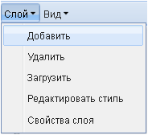
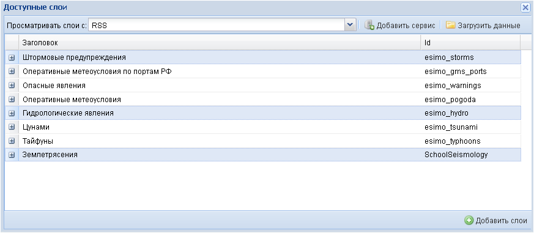
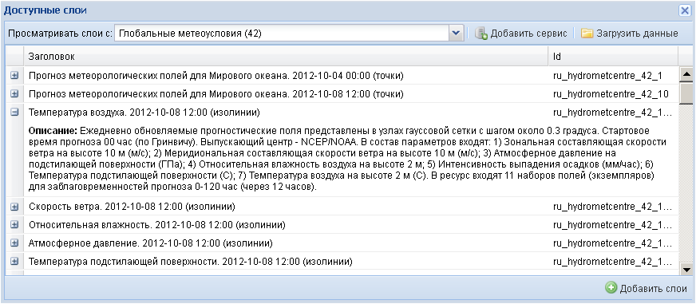
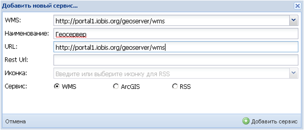
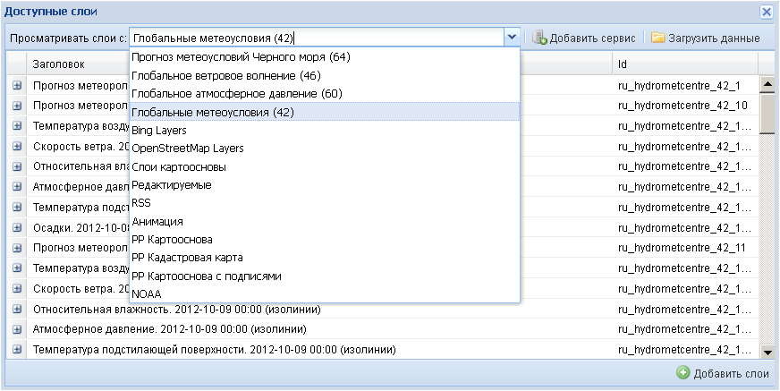
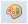

Слой
Команды меню Слой позволяют добавлять, удалять, загружать слои, редактировать их стили и изменять свойства. Команды открываются в ниспадающем списке при нажатии левой кнопкой мыши на название меню или на пиктограмму .
Команда Добавить служит для: 1) - добавления (управления составом) тематических картографических слоев, которые накладываются поверх выбранной картографической основы, 2) - добавления новых сервисов.

При активировании команды появляется дополнительное окно Доступные слои, которое используется как для добавления слоев, так и для добавления сервисов.
1) Для добавления слоев следует воспользоваться ниспадающем списком окошка Просматривать данные с: в котором перечислены доступные сервисы, определенные администратором.

После выбора нужного сервиса все его доступные слои отобразятся в окне.
Из этого списка доступных слоев конкретного сервиса пользователь может отобрать необходимые слои для отображения в рабочем окне карты, нажимая левой кнопкой мыши на названии слоя или нескольких слоев (с помощью клавиш Ctrl или Shift). Закончив выбор, необходимо нажать кнопку Добавить слои.

Выбранные слои отразятся в рабочем окне, а на боковой панели задач появится список этих слоев.

При выборе нужных слоев в окне Доступные слои можно получить краткую характеристику каждого слоя (метаданные). Для этого необходимо нажать на пиктограмму слева от названия слоя, и под этим названием выведется информационная справка.

В окне Доступные слои имеется возможность управлять выводом списка слоев. При наведении указателя мыши на название одного из полей оно подсвечивается цветом, и справа от названия поля появляется пиктограмма  . Нажатие на нее открывает контекстное меню, с помощью которого можно отсортировать записи в поле по алфавиту от А до Я или от Я до А, а также настроить видимость необходимых полей. Сортировку записей возможно провести также, наведя курсор на название поля и нажав левую кнопку мыши. Записи отсортируются, и при этом появится пиктограмма, показывающая направление сортировки
. Нажатие на нее открывает контекстное меню, с помощью которого можно отсортировать записи в поле по алфавиту от А до Я или от Я до А, а также настроить видимость необходимых полей. Сортировку записей возможно провести также, наведя курсор на название поля и нажав левую кнопку мыши. Записи отсортируются, и при этом появится пиктограмма, показывающая направление сортировки  или
или  . Повторные нажатия мышью меняют направление сортировки.
. Повторные нажатия мышью меняют направление сортировки.

2) Если в списке сервисов, определенном администратором, нет нужных пользователю сервисов, их можно подгрузить с помощью опции Добавить сервис.
После активации опции появится дополнительное окно Добавить новый сервис, в котором можно выбрать какой-либо из типов сервисов: (а) WMS, (б) ArcGIS, или (в) слой GeoRSS, - отметив его галочкой в нижней строке Сервис:.

(а) Добавить сервис типа WMS можно, либо выбрав его из ниспадающего преднастроенного администратором списка, нажав пиктограмму ,

либо введя в строке URL: известный пользователю URL-адрес нового сервиса. Одновременно с этим в строке Наименование: следует ввести условное название подгружаемого сервиса для его идентификации в текущем сеансе работы. Настройка сервиса для многократного использования описана в разделе Инструменты-Менеджер сервисов.

После нажатия кнопки Добавить сервис приложение соединится с сервером и загрузит все слои выбранного сервиса в окно Доступные слои. Название сервиса добавится в список Просматривать данные с:.

Если пользователю необходимо иметь возможность подключить управляющие функции (изменение стиля слоя), то одновременно с вводом URL-адреса требуется ввести Rest URL-адрес.
(б) В случае добавления сервиса типа ArcGIS нужно ввести его URL-адрес в строке URL:. Одновременно с этим в строке Наименование: пользователь должен записать условное название подгружаемого сервиса для его идентификации в текущем сеансе работы. Настройка сервиса для многократного использования описана в разделе Инструменты-Менеджер сервисов.

После нажатия кнопки Добавить сервис приложение соединится с сервером и загрузит все слои выбранного сервиса в окно Доступные слои. Название сервиса добавится в список Просматривать данные с:.
(в) Специальный слой GeoRSS (слой сообщений, имеющий координатную привязку) добавляется вводом его URL-адреса. Одновременно с этим в строке Наименование: нужно дать ему имя, а в строке Иконка: - выбрать из списка цвет условного знака, отмечающего местоположение сообщения.
Команда Удалить служит для удаления картографическиого слоя из списка слоев на боковой панели задач в папке Слои.

Предварительно необходимо засветить удаляемый слой в папке слоев.

Команда Загрузить служит для загрузки собственных пространственных данных пользователя на сервер и их представления в виде вновь созданного слоя сервиса. Данные загружаются в форматах архивированного шейп-файла(.zip), .tif, .tiff,.gz,.tar и т.д.

При активации команды появляется дополнительное окно Загрузка данных, в котором нужно заполнить необходимые сведения: дать название создаваемому слою, его описание, указать путь к загружаемым данным. Опционно можно указать рабочее окружение, хранилище и систему координат даных.
Команда Редактировать стиль служит для изменения легенды (условных знаков) объектов слоя.
Данная команда аналогична кнопке управления  Редактировать стиль на боковой панели задач.
Команда Свойства слоя служит для регулирования отображения тематического слоя на экране.
Данная команда аналогична кнопке управления  Свойства слоя на боковой панели задач.
Свойства слоя на боковой панели задач.